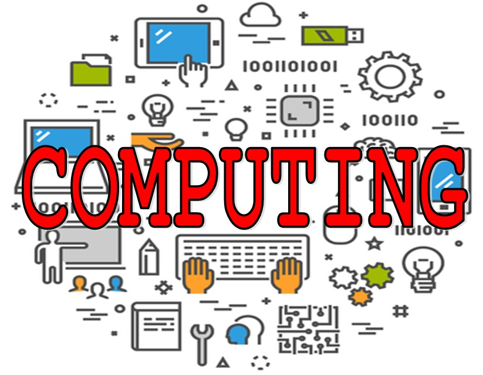
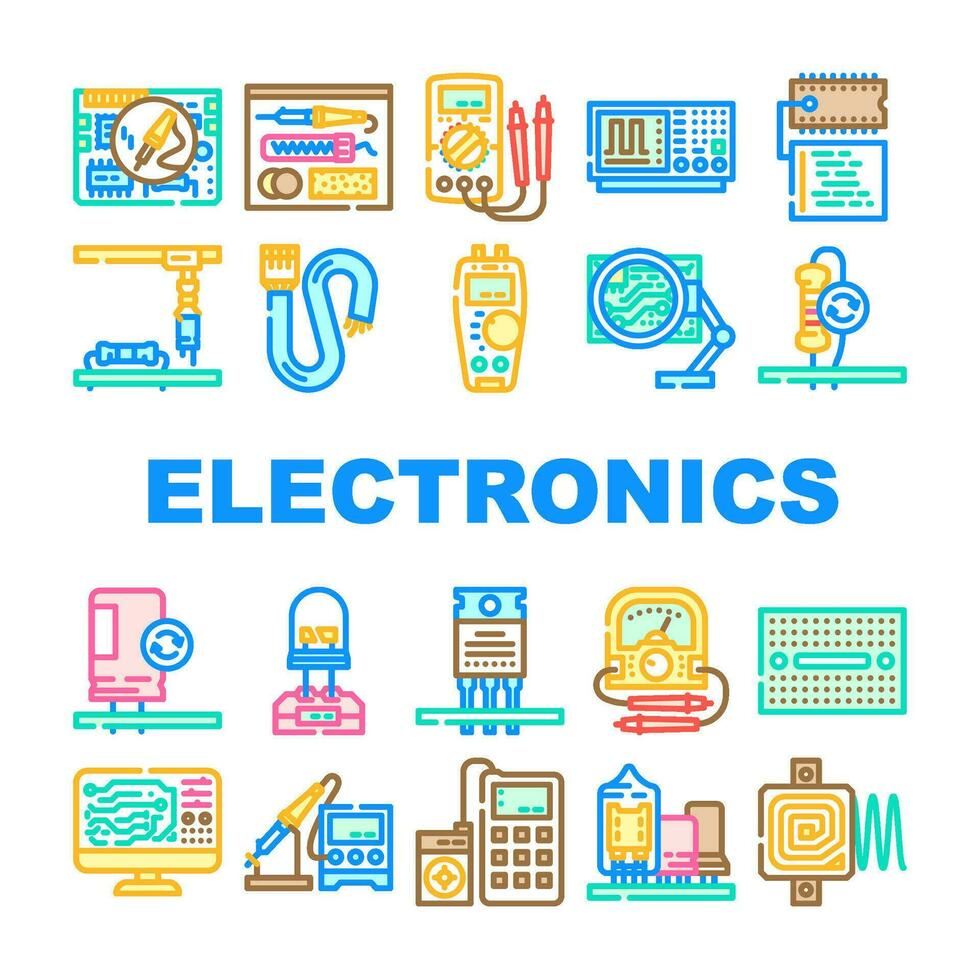

The Computing Aspect of my Degree
October 5, 2026 by Azaria Da Silva

Studying computing has shown me that technology is about solving problems, not just writing code. Since starting my degree, I have learned how websites are built with HTML and CSS, how version control tools like Git keep projects organised, and how to break a large task into smaller, manageable steps. Every lab brings something new to figure out, and that challenge is a big part of why I enjoy it.
What I like most is seeing my work come to life on screen. Going from a blank file to a finished page is rewarding, even when I have to debug along the way. I am looking forward to learning more about databases and programming, and hopefully turning those skills into a career where I can build useful things for other people.
My Experience with Electronics
October 12, 2026 by Azaria Da Silva

I first became interested in electronics when I realised how many everyday devices depend on small circuits working together. Learning about components such as resistors, capacitors and LEDs showed me how a few simple parts can control light, sound and movement. Building basic circuits on a breadboard was challenging at first, but each one that worked made the concepts much easier to understand.
Electronics has also changed the way I think about computing, because it shows what is happening underneath the software. Seeing how a microcontroller reads an input and switches an output on made programming feel more real and hands-on. I would like to keep exploring this area and combine it with my computing studies to build projects that connect hardware and software.